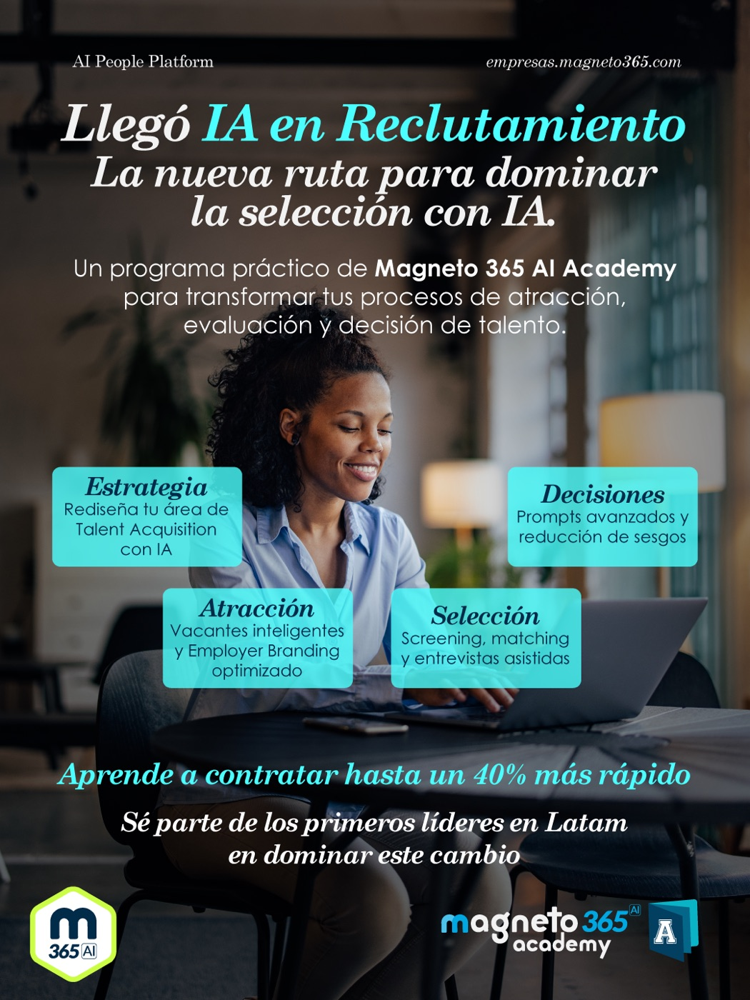
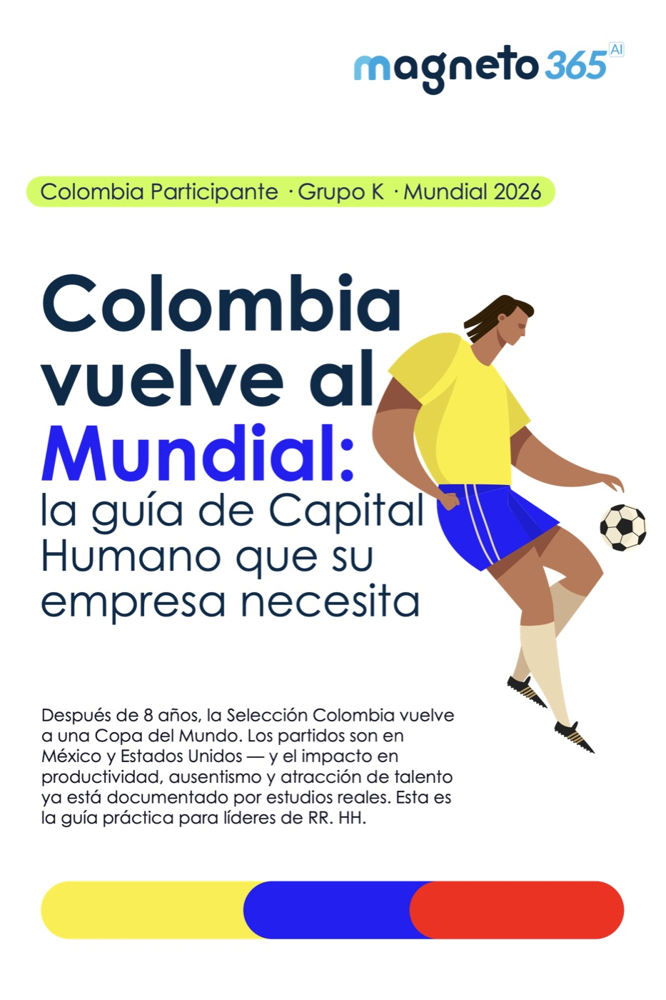
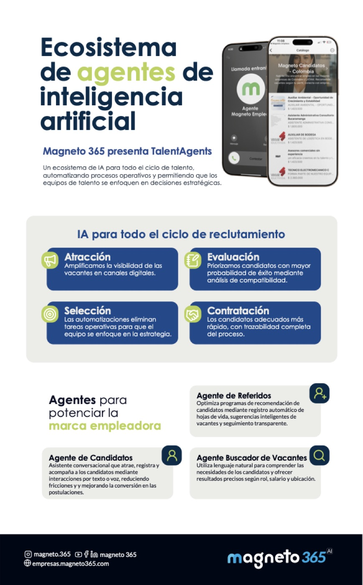
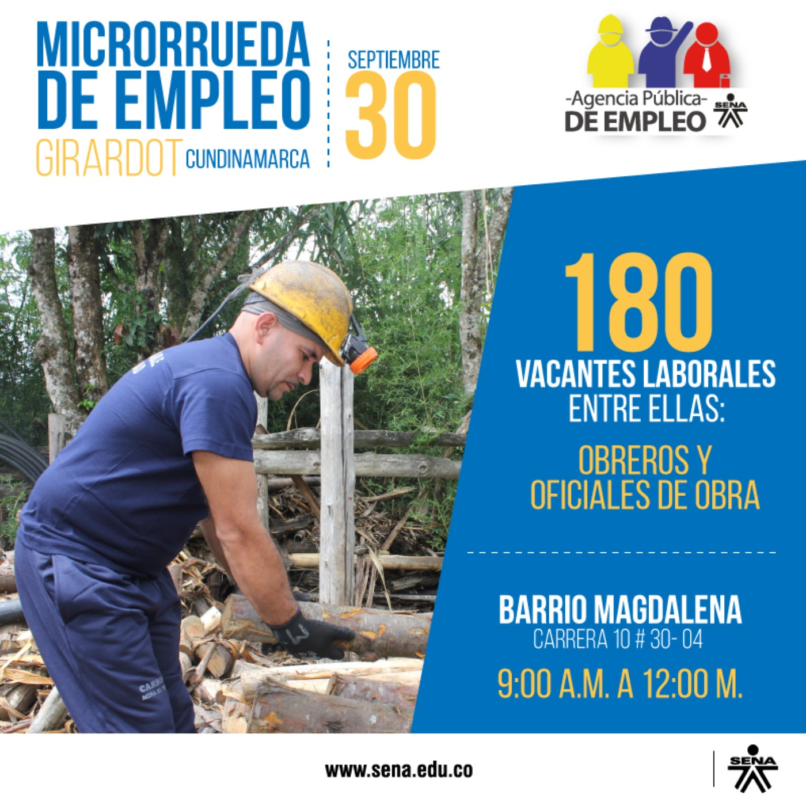
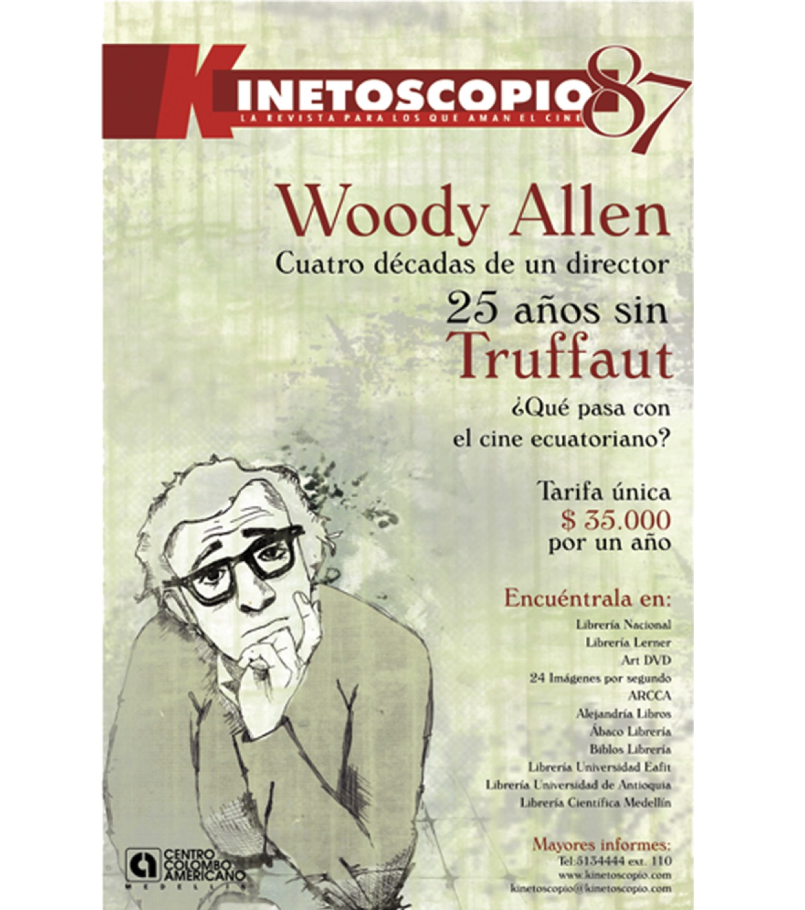
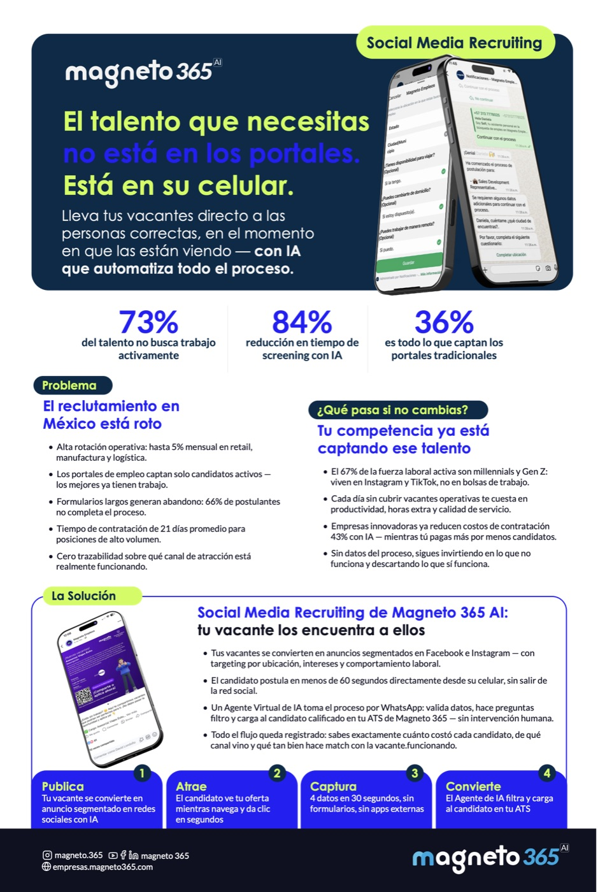
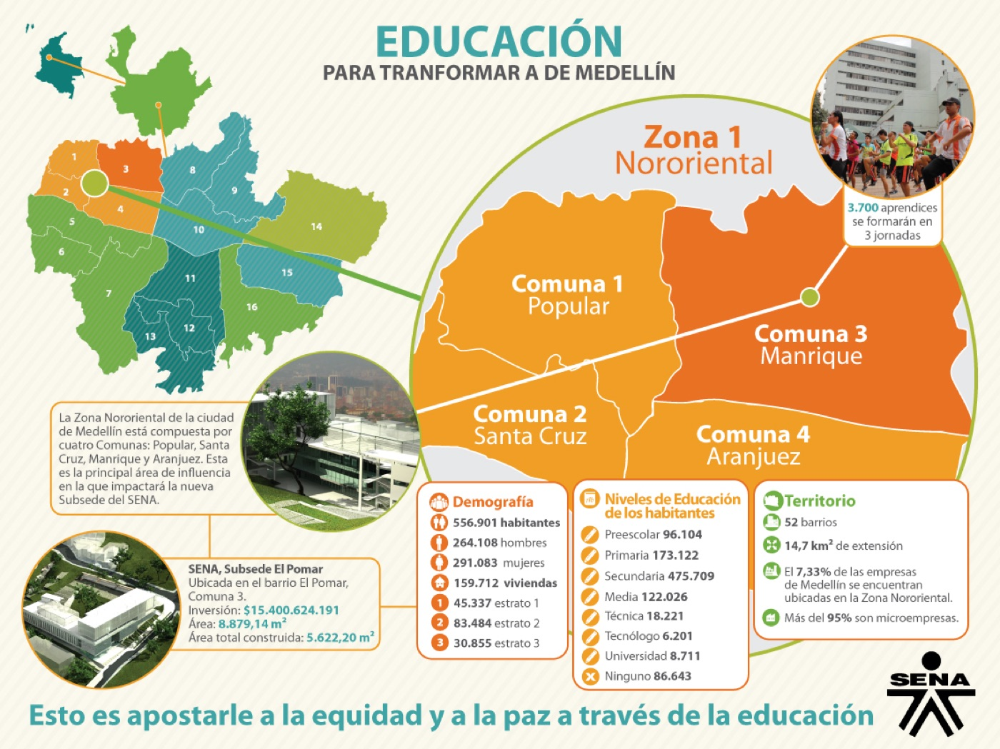
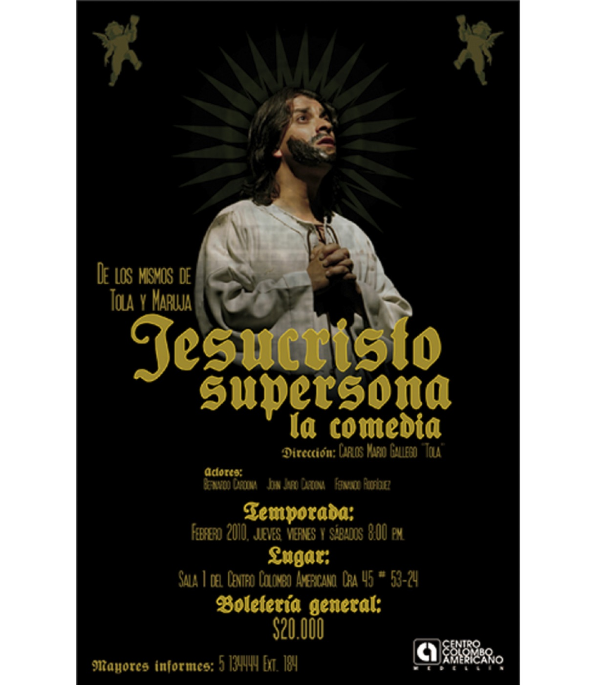
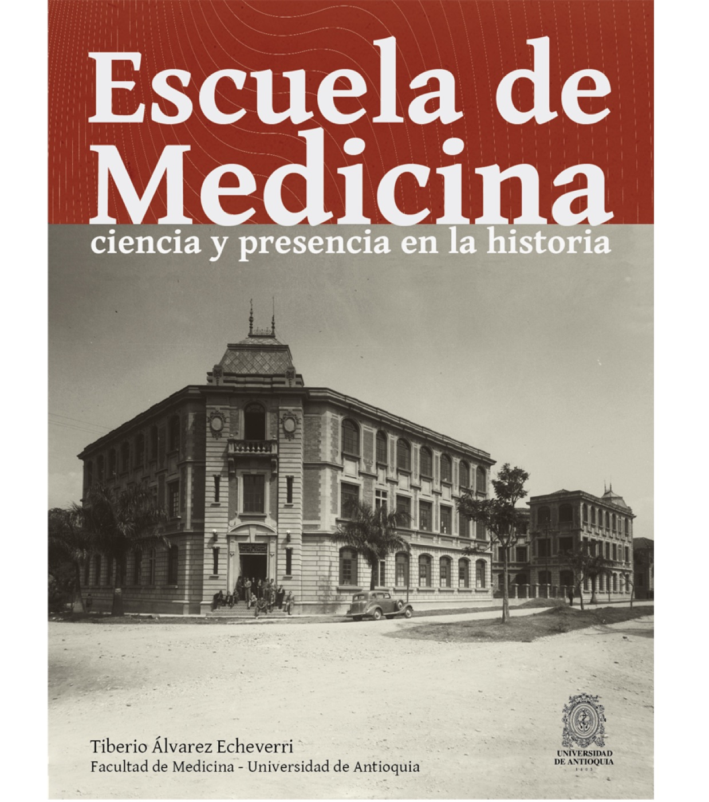

De afiches de cine a sitios web con IA: el mismo oficio, más grande cada año. Soy David Londoño, diseñador visual y especialista en Gerencia de Marca. Este es mi archivo, ordenado por año, para que veas cómo pienso y no solo lo que hice.
 2026Magneto
2026Magneto 2026Magneto
2026Magneto
2026Magneto
2026Magneto
2026Magneto 2025Magneto
2025Magneto
2015SENA 2015SENA
2015SENA 2015SENA
2015SENA 2015SENA
2015SENA 2012UdeA
2012UdeA 2012UdeA
2012UdeA 2012UdeA
2012UdeA 2009Colombo
2009Colombo 2009Colombo
2009Colombo
2009Colombo
Un ecosistema visual para una plataforma de talento con IA.
Participé en la evolución de Magneto a Magneto 365 AI: el sitio en Webflow, el manual de marca B2B, campañas de contenido como Coffee Break y AI Academy, y el sistema de one-pagers para el equipo comercial.



Diez años formando diseñadores me enseñaron que un buen sistema se puede explicar. Por eso diseño sistemas, no piezas sueltas.
Periódicos, infografías y el material de WorldSkills.
Comunicación interna y externa para la regional más grande del SENA: el periódico y los boletines, campañas de empleo, eventos regionales y el recibimiento de los competidores de WorldSkills.

Donde aprendí que cada afiche necesita una idea.
Cine, teatro, música, congresos médicos: cada evento con su propio concepto visual, desde una radiografía hasta un collage de estrellas de Hollywood.

